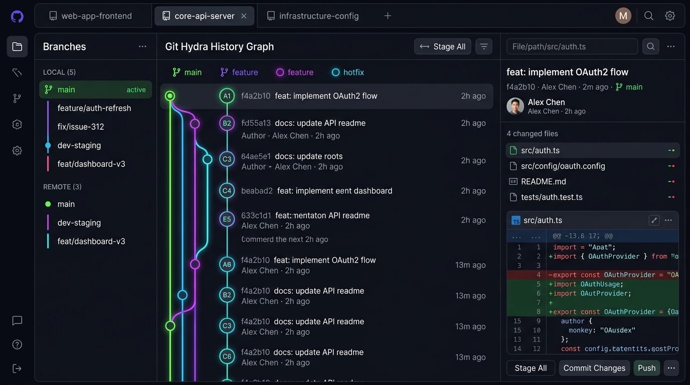

Desenvolvendo com Cursor, Claude, Copilot ou ChatGPT? Quando a IA quebra o que funcionava ou se perde em refatorações, o Git Hydra é a sua rede de segurança visual. Veja todo o histórico em um grafo vivo em tempo real e restaure qualquer versão anterior instantaneamente — sem atritos nem comandos obscuros de terminal.
Construído em 100% Rust nativo com aceleração GPU (Iced + WGPU) para desenvolvedores e engenheiros de software que exigem inicialização em <10ms, zero Electron e privacidade 100% offline.

Desenvolver com IA é incrível até algo quebrar silenciosamente. Veja como o Git Hydra transforma ansiedade em controle absoluto com fluxos visuais simples e imediatos.
Você pediu uma refatoração no Cursor ou Claude. O modelo alterou 8 arquivos ao mesmo tempo e a aplicação simplesmente parou de compilar.
Quer experimentar um prompt audacioso como "reescreva todo o backend em microserviços", mas tem receio de corromper seu trabalho?
Assistentes de código costumam remover funções importantes, renomear variáveis sem pedir ou introduzir vulnerabilidades ocultas.
Assistentes como Cursor, Claude, Copilot e ChatGPT elevam a velocidade de codificação a outro patamar. Mas refatorações agressivas ou loops de alucinação podem introduzir regressões difíceis de rastrear. O Git Hydra é a ferramenta comunitária que devolve previsibilidade: salve checkpoints visuais e volte no tempo sempre que precisar.
git diff em terminal ou rollbacks manuais demandam tempo e geram atrito no meio do fluxo criativo.
Basta abrir o diretório do seu projeto. O Git Hydra detecta repositórios na hora com libgit2 nativa em Rust, sem cadastros, sem nuvem e sem atrito.
Antes de pedir uma mudança grande para a IA, salve um checkpoint visual. Pense nisso como salvar o jogo antes de entrar na caverna do dragão.
A IA quebrou algo ou entrou em loop? Clique no nó anterior no grafo visual e veja seu código restaurado em milissegundos. Você programa com liberdade total!
Nada de logs cegos de terminal. Experimente a interface real da aplicação: navegue pelas branches, inspecione nós do grafo em tempo real, veja diffs sintáticos com Tree-Sitter e teste a Máquina do Tempo em 1 clique:
Cada linha de código foi pensada para eliminar o gargalo entre sua mente e o repositório.
Construído em Iced com backend WGPU nativo. Sem Chromium, sem Electron, sem consumir 2 GB de RAM à toa. Inicialização em menos de 10ms.
Selecione qualquer ponto da história e reverta arquivos instantaneamente com o botão "Voltar no Tempo para este Ponto". Sem risco e sem comandos de terminal.
Botões dedicados no topo para alternar entre Português Simples (amigável para quem programa com IA), English Simple e Git Técnico.
Crie ramificações de testes com o botão "Novo Experimento". Ao mesclar, a fusão segura permite inspecionar e testar antes de confirmar ou cancelar o commit.
Pressione F1 a qualquer momento para abrir o manual contextual com explicações em linguagem humana de cada recurso, atalhos e exemplos reproduzíveis.
Diffs de código inteligentes com parsing sintático real via Tree-Sitter. Colorização semântica de alta fidelidade para dezenas de linguagens.
Comparações visuais de imagem lado a lado, efeito onion-skin e mapa de calor de pixels. Formas de onda de áudio e streaming de vídeo via FFmpeg integrado.
Runtime LuaJIT embutido para criar comandos personalizados, atalhos de teclado, painéis acopláveis e decorações de nós sem precisar recompilar o app.
100% offline. Sem logins forçados, sem rastreadores e sem telemetria em segundo plano. Seu código-fonte permanece estritamente na sua máquina.
| Camada | Motor / Biblioteca | Propósito Arquitetural |
|---|---|---|
| Interface Gráfica | Iced 0.14 (WGPU) | Renderização direta na placa de vídeo com taxa de atualização fluida e consumo mínimo de RAM. |
| Motor Git | git2 (libgit2 vendored) | Acesso ultrarrápido às estruturas do repositório em C/Rust sem spawning de subprocessos desnecessários. |
| Concorrência | Tokio 1.0 Runtime | Execução multithread assíncrona não-bloqueante para tarefas de rede, leitura de disco e hashing. |
| Cache Local | Rusqlite (Bundled SQLite) | Indexação de diffs e histórico de branch cacheado para recuperação instantânea em milissegundos. |
| Colorização | Tree-Sitter 0.26 | Gramática orientada a árvore sintática (AST) para realce de código de alta precisão. |
| Plugins | MLua 0.10 (LuaJIT) | Scripting dinâmico seguro em Lua de alta velocidade. |
Pacotes binários nativos compilados com otimizações extremas via CI oficial.
Compatível com Ubuntu 22.04+, Debian 12+, Mint e derivados.
Compatível com Fedora 39+, RHEL 9+, CentOS e openSUSE.
Executável portátil com desktop file e ícones incluídos.
Raspberry Pi 4/5, servidores e laptops com processador ARM64.
Pacote otimizado com aceleração Metal nativa e ícones de alta densidade retina.
Executável nativo com aceleração DirectX 12 / Vulkan via WGPU. Não requer instalador nem privilégios de administrador.
Instale direto do repositório oficial com otimizações completas da sua CPU:
De engenheiros de software a quem acelera entregas com IA, veja como o Git Hydra se tornou indispensável para a comunidade técnica. Deixe também o seu relato!
"Utilizo assistentes de IA o dia todo na arquitetura de novos microsserviços. O Git Hydra virou meu ponto de restauração indispensável: consigo acompanhar visualmente o que o Cursor altera em cada arquivo e reverter qualquer regressão em milissegundos."
"Uma das ferramentas mais fluidas que já utilizei. A visão de árvore topológica traz clareza total sobre o estado das branches e dos merges, eliminando a confusão de logs planos sem contexto."
"Chega de clientes em Electron devorando 2 GB de RAM. O Git Hydra inicia instantaneamente em 8ms, desenha a árvore de branches a 120 FPS direto na GPU e o diff sintático com Tree-Sitter é cirúrgico. Excelente contribuição para a comunidade."
"O Git Hydra atende perfeitamente tanto quem está integrando IA ao dia a dia quanto desenvolvedores seniores que gerenciam múltiplas ramificações. A velocidade nativa e o baixo consumo de hardware são incomparáveis."
Deixe sua Avaliação ou Comentário
Compartilhe sua experiência, relate como usa o Git Hydra ou sugira melhorias para o projeto.